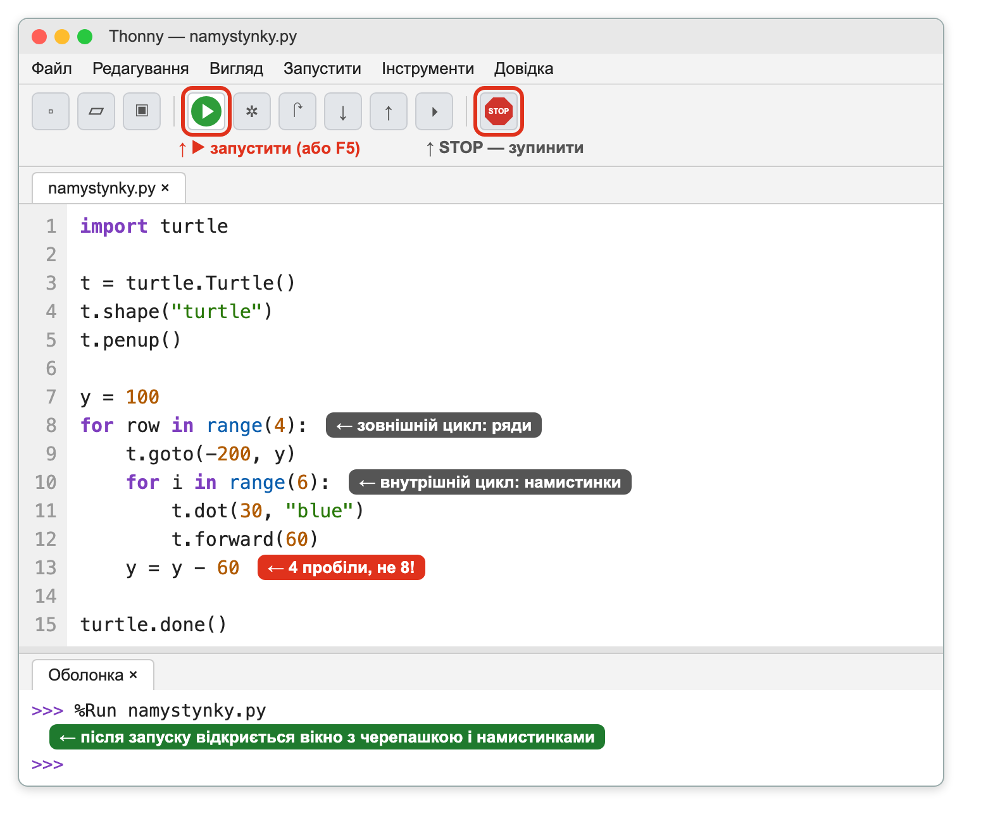
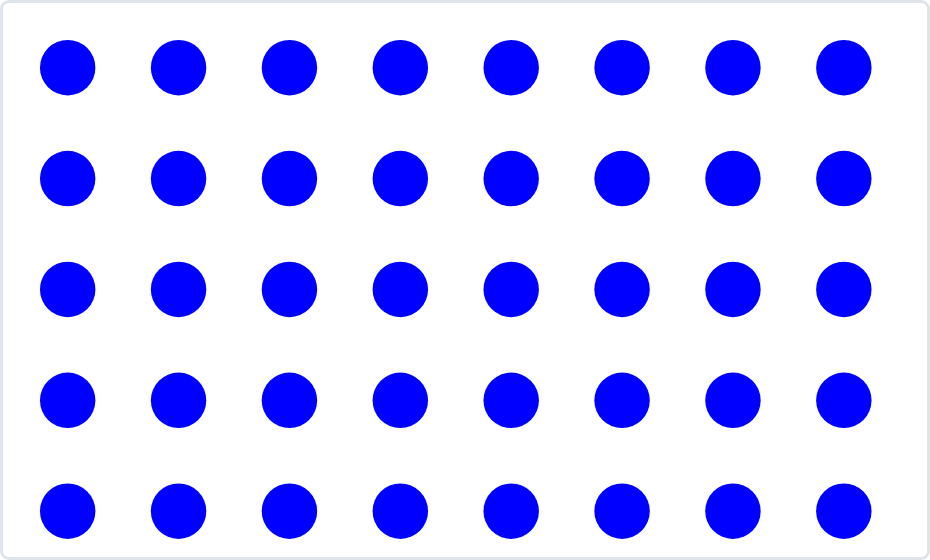
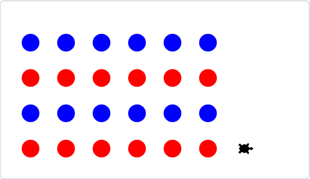
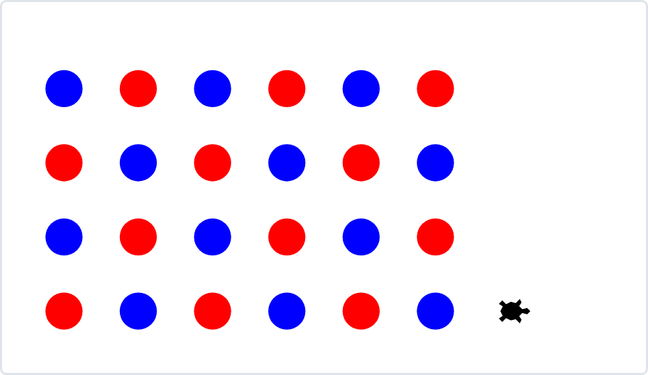
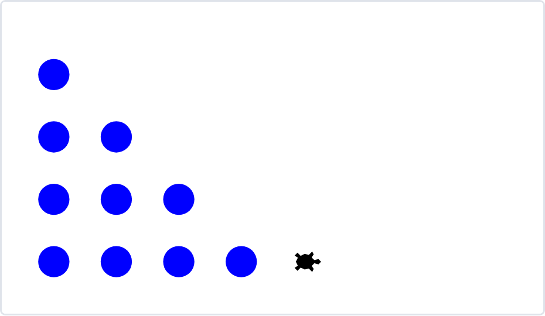

Вкладені повторення · 6-Б · Python, черепашка · практична робота № 2
Вкладене повторення — це цикл всередині іншого циклу. Сьогодні черепашка викладає намистинки рядами: зовнішній цикл робить ряди, а внутрішній — намистинки в кожному ряду.
Приклад із життя
У класі 4 ряди парт, у кожному ряду 6 місць. Щоб обійти всі місця, треба для кожного ряду (4 рази) пройти всі місця в цьому ряду (6 разів).
Разом 4 × 6 = 24 місця. Так само працює цикл у циклі.
Як читати програму
for row in range(4): — повторити 4 рази: 4 ряди.
for i in range(6): — у кожному ряду повторити 6 разів: 6 намистинок.
Внутрішній цикл має більший відступ — він «сидить» усередині зовнішнього.
Як працювати в Thonny

- Відкрий Thonny.
- Натисни Файл → Новий.
- Набери програму із завдання 1. Відступи роби клавішею Tab або 4 пробілами.
- Натисни зелену кнопку ▶ (або F5). Thonny попросить зберегти файл — назви його
namystynky.py. - Відкриється вікно з черепашкою, і вона викладе намистинки.
- Щоб запустити ще раз, закрий вікно черепашки і знову натисни ▶.
Якщо щось пішло не так — внизу, в Оболонці, з'явиться червоний текст. Подивись таблицю «Якщо не працює» нижче.
Завдання 1. Набери і запусти
import turtle t = turtle.Turtle() t.shape("turtle") t.penup() y = 100 for row in range(4): t.goto(-200, y) for i in range(6): t.dot(30, "blue") t.forward(60) y = y - 60 turtle.done()
Так має вийти: 4 ряди по 6 намистинок

Відступи: t.goto і внутрішній for — 4 пробіли. t.dot і t.forward — 8 пробілів. y = y - 60 — знову 4: він виконується один раз після кожного ряду.
Що робить кожен рядок
| Рядок | Що робить |
|---|---|
t.penup() | черепашка не малює лінію, коли йде — лише ставить намистинки |
y = 100 | висота першого ряду |
for row in range(4): | зовнішній цикл: 4 ряди. row — номер ряду: 0, 1, 2, 3 |
t.goto(-200, y) | перейти на початок ряду: ліворуч, на висоту y |
for i in range(6): | внутрішній цикл: 6 намистинок у ряду. i — номер намистинки: 0, 1, 2, 3, 4, 5 |
t.dot(30, "blue") | поставити синю намистинку розміром 30 |
t.forward(60) | зробити крок 60 праворуч до наступної намистинки |
y = y - 60 | наступний ряд на 60 нижче: 100, 40, −20, −80 |
Завдання 2. Більше рядів
Зроби 5 рядів по 8 намистинок. У програмі завдання 1 зміни два числа: range(4) → range(5) і range(6) → range(8). Запусти ▶ і порахуй намистинки: 5 × 8 = ?

Завдання 3. Смугасті ряди
Тепер ряди мають бути по черзі сині й червоні. Поверни range(4) і range(6). Замість рядка t.dot(30, "blue") постав розгалуження — воно виділене жовтим:
import turtle t = turtle.Turtle() t.shape("turtle") t.penup() y = 100 for row in range(4): t.goto(-200, y) for i in range(6): if row % 2 == 0: t.dot(30, "blue") else: t.dot(30, "red") t.forward(60) y = y - 60 turtle.done()
Так має вийти

Що означає row % 2 == 0? Простими словами: «номер ряду парний». Ряди 0 і 2 — сині, ряди 1 і 3 — червоні. Так кольори йдуть по черзі.
Завдання 4. Шахівниця
У програмі завдання 3 зміни лише умову: if row % 2 == 0: → if (row + i) % 2 == 0:. Тепер кольори чергуються і в ряду, і між рядами — як клітинки на шахівниці.
for i in range(6): if (row + i) % 2 == 0: t.dot(30, "blue") else: t.dot(30, "red")
Так має вийти

Чому так? row + i — це номер ряду плюс номер намистинки. Коли сума парна — синя, коли непарна — червона. Наприклад, ряд 0, намистинка 0: 0 + 0 = 0 — синя; ряд 0, намистинка 1: 0 + 1 = 1 — червона.
Завдання 5 ★. Трикутник
У першому ряду 1 намистинка, у другому — 2, у третьому — 3, у четвертому — 4. Візьми програму завдання 1 і у внутрішньому циклі зміни range(6) → range(row + 1). Ряд 0 дасть 1 намистинку, ряд 1 — 2, і так далі.

Якщо не працює
| Що бачиш | Що не так |
|---|---|
IndentationError | Відступи. Під зовнішнім for — 4 пробіли, під внутрішнім — 8, під if і else — 12 |
SyntaxError | Забута двокрапка після for, if, else або лапка |
NameError | Помилка в слові: tutrle, rnage. Перевір літери |
| Усі ряди в одному місці, один на одному | Забутий рядок y = y - 60 |
| Видно лише 1–2 ряди, решта зникли | y = y - 60 має 8 пробілів: він потрапив у внутрішній цикл, і ряди «тікають» униз за край вікна. Має бути 4 |
| Одна довга лінія намистинок | Немає t.goto(-200, y) або в нього не той відступ |
Тест
Вибери відповідь зі списку і натисни «Перевірити». Перевірити можна лише один раз.
Правильно: 0 з 10
Після кожного завдання поклич учителя або покажи екран сусідові.
Домашнє завдання
Вивчити, що таке вкладене повторення. Порахувати: скільки разів виконається внутрішній цикл, якщо зовнішній повторюється 3 рази, а внутрішній — 7? Відповідь скажеш на уроці.